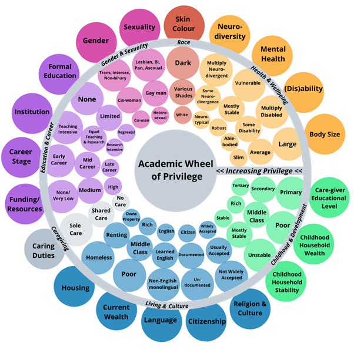

Observable language
Commitments describe what people can do, not abstract qualities they are expected to perform.
A living learning manifesto
Together, we decide how we will learn, listen, question, disagree, share space, take accountability, repair relationships, and revise our commitments.
The starting statements draw from scholarship and practice guidance concerning critical and anti-oppressive pedagogy, anti-racist education, disability and anti-ableist pedagogy, Universal Design for Learning, trauma-informed pedagogy, difficult dialogue and intellectual humility, restorative practices, relational pedagogy, Indigenous and decolonizing education, and institutional human-rights and accessibility obligations.
These are seeds, not conclusions. They give us something concrete to examine, challenge, rewrite, remove, and build upon. Every category names the bodies of work that most directly informed it.
This is an evidence-informed design, not a systematic review. It combines peer-reviewed scholarship, foundational books, a recent systematic review, and higher-education practice guidance. Microaggression research includes debates about definition, measurement, interpretation, and causal inference. The design recognizes subtle discriminatory interactions and cumulative effects while preserving clarification, context, evidence, and proportionate response. Trauma-informed teaching supports choice, relationality, and transparency but does not make the classroom therapy. Universal Design for Learning anticipates variability but cannot guarantee that one design meets every access need.
What we are making
Graduate classrooms involve intellectual disagreement, professional judgement, emotionally significant content, lived experience, unequal social power, and different communication and access needs. General expectations such as “be respectful” do not tell us what to do when interaction becomes difficult.
Principles carried into the design
Commitments describe what people can do, not abstract qualities they are expected to perform.
We all contribute to the learning climate, can name concerns, make mistakes, receive feedback, and participate in repair. The instructor is inside the same “we.”
Theories, evidence, methods, policies, and professional judgements can be examined rigorously. A person’s humanity and right to participate are not class propositions.
Experience may be offered as knowledge. Private identity, disability, diagnosis, trauma, or history is never the price of participation or credibility.
Variability in communication, processing, attention, movement, and regulation is ordinary. People need not publicly justify every access practice.
Impact tells us what occurred and what was affected. Intent may provide context, but does not erase impact. Accountability asks what repair and changed action require.
A misunderstanding, harmful comment, repeated pattern, and serious discriminatory conduct are different events and may need different responses.
Experience is information. We version and revisit the manifesto when we learn that something is missing, unclear, or not working.
Students can still propose the values underneath these phrases. The task is to translate them into language that is more precise, accessible, and usable.
Listen to understand, do not demean, ask before assuming, make room, and critique claims with specificity.
Approach uncertainty with curiosity, ask for clarification, attend seriously to impact, and let intent provide context without erasing consequences.
Build an accountable, accessible community with clear ways to pause, seek support, respond, and repair. No class can guarantee universal safety or comfort.
Everyone has a right to dignity and participation. Claims and interpretations remain open to examination of their evidence, reasoning, assumptions, and consequences.
Clarify what evidence or values are in tension, what may remain unresolved, and what still requires action.
Protect privacy, stories, and attribution while being transparent that absolute confidentiality cannot be guaranteed.
Notice conversational space, make room, and recognize multiple forms of participation without shaming people or counting only speech.
Notice overlap, make sure people can finish, and return the floor when someone is prevented from being heard without prescribing one communication culture.
Pause, name what needs attention, clarify, connect to our commitments, address impact, and choose a proportionate next step.
Acknowledge different institutional roles, social locations, histories, and risks. Make power discussable rather than pretending it disappeared.
Expect challenge and uncertainty while retaining agency to pause, regulate, step away briefly, seek clarification, and return when possible.
Situate claims and distinguish evidence, interpretation, and experience without requiring disclosure or speaking for an entire group.
Hold impact and intent in the same analysis while centring what occurred, what it affected, and what action follows.
Practice care and candour together. Name concerns clearly, avoid humiliation, and keep critique connected to learning and accountability.
Power is multidimensional, relational, structural, and contextual. None of us enters without power, and none of us occupies the most privileged position across every setting. The purpose of locating power is not to decide who is “most privileged.” It is to notice the relations affecting learning so we can take responsibility for them.
You decide what you reflect on. You never need to disclose identities, diagnoses, histories, finances, citizenship, sexuality, disability, or any other private information to participate.
Race, gender, class, disability, sexuality, citizenship, language, and other social relations shape access, credibility, opportunity, exposure, and constraint.
Roles confer particular authority and responsibility: instructor, student, clinician, supervisor, researcher, administrator, practitioner, or service user.
Who knows, is believed, controls a resource, feels at home, or bears greater consequences for speaking? Power shifts with setting and relationship.
The university is also a location of power
Participating in graduate education places us within systems of educational access, knowledge production, credentialing, and professional authority. We may carry that authority into practice, research, policy, education, and community spaces.

I am part of this learning community and socially located within it. As the instructor, I hold institutional authority: I designed the course, assess academic work, facilitate the classroom, and carry responsibilities arising from my faculty role. I am also a racialized woman and a pre-tenure faculty member. Those locations shape how I experience academic institutions and how power operates around me. My authority as instructor does not erase those social locations. Those social locations do not erase my authority as instructor. Both are true at the same time.
Students can shape language, emphasis, examples, priorities, additions, and how commitments are enacted. Co-design remains grounded in legal, ethical, academic, and institutional obligations.
Language · practices · examples · priorities · additions · how commitments live in this class
Build the manifesto
Keep what belongs. Edit by writing new language. Delete what should not enter your proposal. Add what is missing.
A manifesto is incomplete if it names only ideal behaviour. This pathway supports ordinary rupture and harm while preserving formal institutional routes when they are required. Different situations call for different responses.
Your assembled proposal
Download creates the PDF directly. Browser print is available in Chrome, Safari, and other full browsers. Save the completed manifesto before starting a new classroom.
Finished reviewing?
Download a PDF directly to this device.
Your work is saved only in this browser’s local storage. It is not sent to an instructor, server, or analytics service. Anyone using this browser profile may be able to see it. Clear the draft before using a shared device.
When you finish, use Download PDF or Browser print. A student or small group can submit that PDF through the course’s usual channel. The instructor and class can then compare the proposals and deliberate about the commitments that will become the shared classroom version.
Selected foundations
Full publication details and links are preserved in the evidence-informed development draft on which this tool is based.